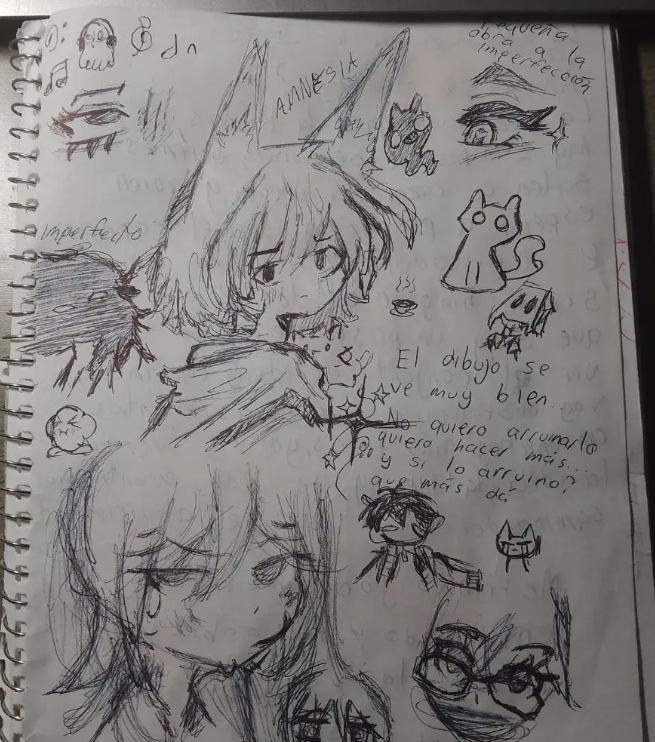

01-03-24
Qué feo es sentir un vacío que no va a llenarse
Por más que uno lo intente
Ojalá retrocediese el tiempo pa' poder abrazarte
Y encararte de frente
No eras santa ni perfecta
Pero seguías siendo grande
Tengo cosas pa' contarte
Puertas para abrirte
Pensé que eras diferente
Vuelve a mí como hiciste antes
No quiero mentirte
Mi corazón quedó hecho en partes
Y, en parte, por lo que hiciste
Pero te extraño, aunque no haga bien
Ni a vos, ni a mí, ni a nadie
Dentro de poco, te quiero ver
Aunque duela
Aquel día domingo
Esperé a que vengas
Noto que no eras para mí
Esos ojos lindos
Me hicieron de piedra
Te extraño
Aunque no te haga feliz
Bueno ayayayayayayayayayay xd
01-03-24
Realmente hace ya bastante tiempo no hago nada parecido a esto, ni a dibujos ni nada de eso.
Solo quería pasar el rato en clase, estaba aburrido con unas grandes ganas de, ya sabes, aburrirme haciendo algo,
así que hice este dibujo Javier:

15-03-24
Bueno, como estoy a punto de entrar a vacaciones me he centrado más que nada en mi canal de YouTube, así que no le he dedicado tanto tiempo a otras cosas. Me siento orgulloso de lo que he logrado por ahora, me gustan mucho mis resultados hasta el momento y siento que puedo seguir mejorando. Últimamente he tenido más que nada pensamientos de introspección y siento que puedo mejorar mi lectura leyendo más, y también eso me ayudaría a poder escribir muchísimo más rápido, pero también teniendo coherencia en lo que escribo, al igual que estar bien gramaticalmente.
Me gusta mucho explorar este tipo de mundos sobre la redacción de distintas cosas y todo eso. De hecho, me acordé que tengo un amigo que se llama Atta, me ha llamado para poder jugar ajedrez. Hablando de juegos, recordé que me gusta mucho jugar Tetris, hace poco hice un récord personal dentro de él, colocando más piezas sin morir en el intento.
Bueno, ya estuve jugando con Atta un rato y la verdad es que ha mejorado bastante. Me gusta cómo va avanzando. Dejando eso de lado, he querido hacer y escribir más frases, al igual que estar leyendo para mejorar mi manera de escribir y la manera en la que pienso. Creo que es una forma en la que puedo estar un poco más en paz con lo que ha pasado recientemente con Gabriela.
Aunque mira, Javier, la verdad ya, supérala. Quizás la verás de vuelta en el futuro o conocerás a alguien mejor, a alguien que de verdad te valore y te quiera. Ella ni siquiera te decía un maldito "te quiero" ni aunque le suplicaras que lo hiciera. Solo te dio un regalo con algo escrito, pero... meh. Al final, no terminó nada bien. Encontrarás a alguien mejor que ella, porque ella al parecer no quería nada contigo, y lo sabías desde un inicio.
Aun así, te aferraste como siempre a querer. Pareces una puta pulga, hasta que no te quitan, no te vas. Me das asco, Javier.
23-03-24
Aquí tengo unas cuantas ideas para algunas frases:
• Cada día, soy nuevo, soy tuyo...
• Todo parece claro, como si el final estuviera cerca. El humo huele a fracaso y no quiero fallar, pero todas las escaleras conducen directamente al infierno.
• Me gustaría saber cómo estás tan perdida como marea sin luna y yo tan perdido en el mar.
• Un "para siempre" que siempre fue para un rato, y yo soy el único culpable de recibir ese trato.
• Tú eres una diosa y yo un simple chico que te adora.
• Gotas de lluvia caen, caen con lentitud y parpadean en el ocaso de la tarde. Los viajeros caminan por el sombrío sendero con toda su alma perdida.
Tengo muchas frases en mente y muchos poemas, pero los voy a ir subiendo poco a poco. Los escribiré en otra libreta que me servirá solamente para escribir mis frases, y cuando termine de hacerlo, o me canse, lo escribiré todo aquí, en esta página, en esta libreta.